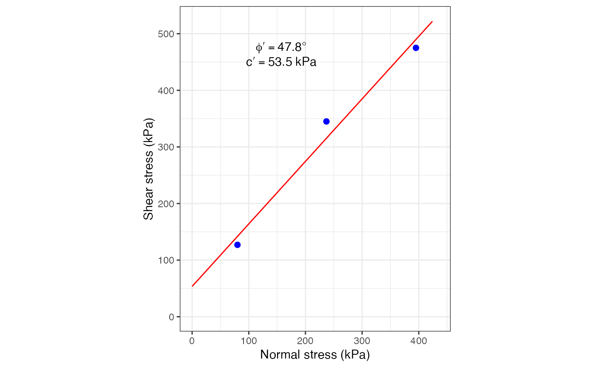

Draws the sigma-tau pairs along with the Mohr-Coulomb failure envelope for a set of direct shear lab test results, and annotates the graph with the values of cohesion and friction angle.
DS_plot(sig.n, tau, units = "kPa")
| sig.n | A numeric vector of the normal stress values |
|---|---|
| tau | A numeric vector of the shear stress values |
| units | A string with the units of the measurements |
A ggplot of the direct shear test results
Coduto, D. P. (1999). Geotechnical Engineering - Principles and Practices. Prentice Hall.
Holtz, R. D., Kovacs, W. D. & Sheahan, T. C. (2011). An Introduction to Geotechnical Engineering. Prentice Hall.
Gonzalez de Vallejo, L. I. (2004). Ingenieria Geologica. Prentice Hall.
